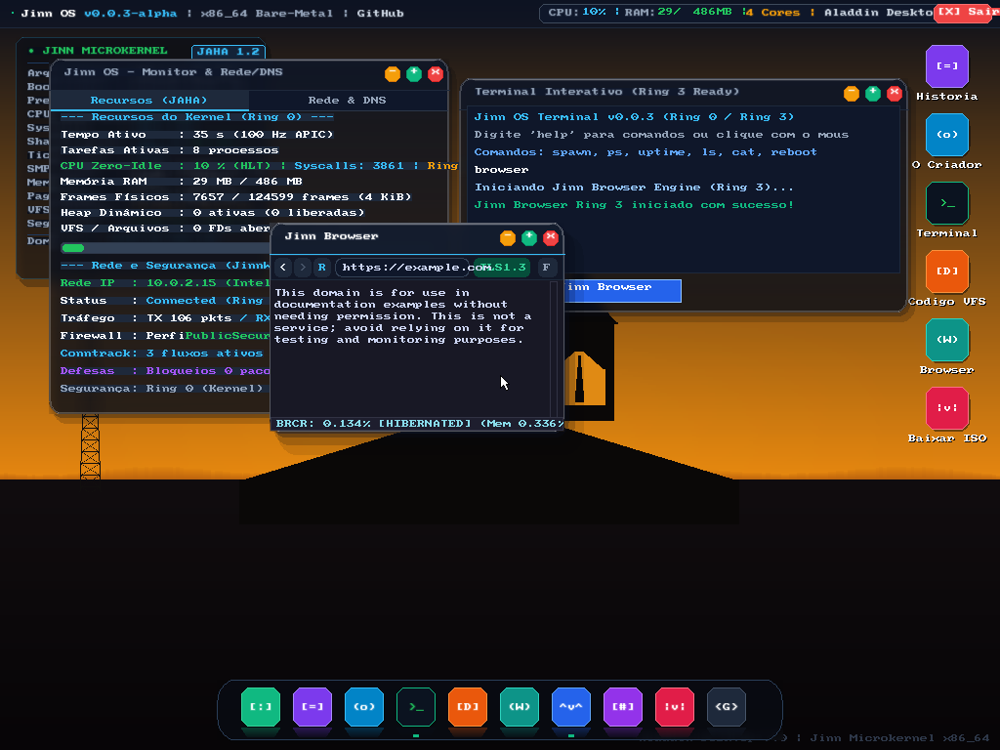

Building a TLS 1.3 Browser in a Rust Microkernel Operating System: Arquitetura Ring 3 e Auditoria Honesta de PKI
Parte 1 da série Jinn Browser — Internet Connectivity, TLS and Network Observability. Construir um cliente HTTPS em espaço de usuário (Ring 3) sobre um microkernel experimental em Rust (x86_64 #![no_std], sem OpenSSL nem libc) exige isolar criptografia, reassembly TCP e decodificação HTTP em buffers estáticos em .bss — separando rigorosamente o que já funciona em ambiente emulado QEMU do que ainda falta para autenticação completa de certificados.
1. Diagnóstico do que foi Levantado (Ring 3 TLS vs. Kernel PKI)
Uma auditoria direta do código atual do projeto revelou uma distinção fundamental entre duas camadas TLS presentes no repositório que deve ser declarada com total transparência:
-
O que o Jinn Browser em Ring 3 (
apps/ola-mundo/src/tls.rs) executa hoje: monta oClientHelloRFC 8446 (SNI,supported_versionsTLS 1.3,key_shareX25519,signature_algorithms), deriva segredos comHKDF-SHA256, suportaTLS_CHACHA20_POLY1305_SHA256(com aritmética Poly1305 de limbs 44/44/42 bits RFC 8439) eTLS_AES_128_GCM_SHA256(AES + GHASH), acumula registros fragmentados de handshake no buffer contínuoHS_REASM_BUF(até 32 KB), valida o HMACFinisheddo servidor (msg_type == 20), trata alertas cifradosclose_notifye decodifica HTTP/1.1chunked+ gzip/deflate. -
O que a auditoria identificou como lacuna no Ring 3: nas linhas
1435–1438deapps/ola-mundo/src/tls.rs, as mensagensEncryptedExtensions (8),Certificate (11)eCertificateVerify (15)alimentam apenas otranscript.update(...). O cliente do navegador ainda não valida cadeia X.509, SAN/hostname, datas de validade, revogação (CRL/OCSP) nem a assinatura deCertificateVerify. -
Contraste com o motor PKI existente em Ring 0 (
src/net/{tls13.rs, x509.rs, pki.rs}): o subsistema de kernel já implementa parser ASN.1 DER RFC 5280,TrustStorecomISRG Root X1(Let's Encrypt) eDigiCert Global Root CA, correspondência RFC 6125 (verify_hostname_match), checagem de relógio RTC e validação de assinaturas RSA-PKCS1/PSS e ECDSA P-256 emCertificateVerify(Ed25519 ainda retorna erro explícito; sem CRL/OCSP). Essa capacidade ainda não foi conectada ao navegador Ring 3.
2. Melhorias Implementadas & Arquitetura em Ring 3
Isolamento Criptográfico em Espaço de Usuário
Toda a máquina de estados TLS 1.3 do browser roda sem privilégios de Ring 0, utilizando a Syscall 69 (sys_getrandom) apenas para entropia efêmera X25519 e sockets TCP do kernel para E/S. Buffers de descriptografia e reassembly residem em .bss estático, evitando estouros de stack em Ring 3.
Compatibilidade com CDNs Reais no QEMU
Correção dos carries de 130 bits no Poly1305 RFC 8439, implementação completa de TLS_AES_128_GCM_SHA256 (adotado por servidores como example.com), suporte a NewSessionTicket e entrega segura de corpos HTTP quando um alerta close_notify cifrado chega no mesmo burst TCP.
3. Evidências Visuais Reais (QEMU + Intel e1000)

https://jinn-os.dev.br (61.313 bytes + ativo PNG 2.044 bytes) sobre TLS 1.3 em modo tela cheia 1024x768 no QEMU (NIC e1000).

TLS_AES_128_GCM_SHA256 e decodificação HTTP/1.1 Transfer-Encoding: chunked em https://example.com.
4. Aplicabilidade: Indústria, Uso Doméstico e Servidores
Usos Industriais & Edge Hardware Fanless
Terminais industriais e painéis locais podem manter toda a pilha de parsing HTTP/HTML/TLS em processo Ring 3 reiniciável, reduzindo a superfície de privilégio no kernel em dispositivos com memória restrita (~33 MiB de RAM total observados no boot QEMU).
Usos Domésticos & Computação Leve
Demonstra navegação direta em documentos estáticos sobre HTTPS em máquinas antigas ou modulares sem runtime pesado — ainda restrita a leitura pública experimental até que a autenticação X.509/SAN em Ring 3 esteja ativa.
Usos em Servidores & Isolamento Zero-Trust
Separa por fronteira de hardware (anéis Ring 0 / Ring 3) os buffers criptográficos do escalonador e drivers. O próximo passo natural é expor ou compartilhar o validador RFC 5280/6125 de src/net/pki.rs com clientes Ring 3 e adicionar testes negativos contra certificados inválidos.
5. Limitações Conhecidas & Fronteira Honesta
Os testes atuais foram executados em ambiente virtualizado QEMU e não constituem auditoria formal de segurança TLS, validação em silício físico nem certificação comercial. Enquanto apps/ola-mundo/src/tls.rs não verificar cadeia X.509, SAN/hostname, datas e CertificateVerify (nem OCSP/CRL ou Ed25519), o navegador garante confidencialidade AEAD e integridade de transcript Finished contra erros de canal, mas não proteção contra atacantes MITM ativos.
Jinn Engineering Observatory • Semântica & Colaboração Aberta
Domínios Técnicos & Ecossistemas Relacionados
Badges clicáveis indexados por bancada, domínio de engenharia e organizações/padrões do Radar Expandido (Nível B contextual, sem endosso implícito):
Aplicabilidade: Indústria, Uso Doméstico e Servidores
Terminais críticos, PLCs e gateways auditáveis com isolamento Ring 3, W^X em PML4 e integridade offline SHA-256 (.jpkg).
Navegação isolada, recuperação automática de sistema de arquivos FAT32/Ext2 e operação sem telemetria oculta.
Contenção de falhas de drivers em espaço de usuário, fronteira zero-trust de syscalls e redução de cadeia de suprimentos (0 crates.io no kernel).
Chamada Aberta para Pilotos (Indústria Local, Universidades & Setor Público Ético)
Convidamos integradores de automação industrial, laboratórios universitários de arquitetura/SO e instituições públicas eticamente responsáveis a reproduzirem estes experimentos em silício real (fechando lacunas emulador vs. hardware da Tabela B) ou propor estudos-piloto com Jinn OS, Aladdin e JHCS.
![[Valid RSS]](/valid-rss-rogers.png "Validate my RSS feed")